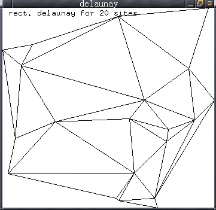
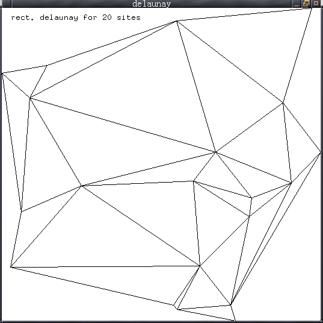
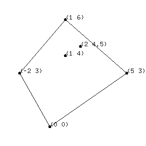

通常人们只有较少的绘图要求。但是为了把一个图形库用于绘图，用 户往往花了很多不必要的工夫。所以我设计了这个简单的绘图工具用 于我的计算几何程序绘图。它在 CMU CL 测试通过，应该能够在大多 数支持 CLX 的 Common Lisp 解释器运行。
它有这样一些特点：



有一个缺点就是有大量图形时它会花很多功夫刷新屏幕，闪动厉害。 现在我还没有时间写文档。如果有人对这个东西感兴趣或者有建议可 以告诉我，我可以考虑抽些时间改进这个东西，写出使用说明文档。
现在看文件的最后注释掉的东西可以知道基本的用法。如果要增加新 的基本绘图操作可以参考一下 graphics-draw-line 的定义：
(define-drawer graphics-draw-line graphics-redraw-line
(gd x1 y1 x2 y2 &type :line)
(with-graphics-device gd
(xlib:draw-line window gc
(funcall coord-map-x x1)
(funcall coord-map-y y1)
(funcall coord-map-x x2)
(funcall coord-map-y y2))))